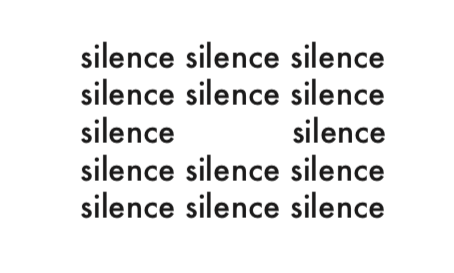

1 Marguerite Duras, Le ravissement de Lol V. Stein, France, Gallimard, Collection Folio, 1964, p 24.
Elle ne parla que pour dire qu’il lui était impossible d’exprimer combien c’était ennuyeux et long, long d’être Lol V. Stein. On lui demanda de faire un effort. Elle ne comprenait pas pourquoi, disait-elle. Sa difficulté devant la recherche d’un seul mot paraissait insurmontable.1
J’ai écrit ce texte avec l’idée de et éclaircir un peu plus les idées et conceptions dispersées que j’avais autour des mots. Ces questionnements que je me fais autour du langage on été depuis toujours au centre de diverses réflexions. À partir de pensées de différents champs d’études comme la philosophie, la linguistique, le design graphique, et la poèsie, et de manière non exhaustive, je cherche à comprendre sa place, ses limites et ses possibilités.
La langue est une dans ma vie. Quand je passe d’une langue à une autre, j’ai souvent l’impression qu’une autre personne prend le contrôle de mon corps. Ce changement n’est pas violent, mais il se fait discrètement, si discrètement que même moi, j’ai dû mal à m’en rendre compte. La personne qui parle en français n’est plus la même que celle qui parle en espagnol. L’image que j’ai de ces deux femmes est souvent liée à des étapes de ma vie. Plus le temps passe, plus j’ai du mal à les différencier.
Si j’imagine que je parle toutes les langues du monde, que chaque langue a une différente et que chaque personnalité utilise le même mot traduit une centaine de fois, est-ce que le sens de ce même mot est toujours le même ? Est-ce qu’on comprend ce que je veux dire? Est-ce que pour les autres personnes chaque mot a un sens différent ?
2Voir, Définition en ligne, CNRTL, http://www.cnrtl.fr/definition/voir, Consulté le 13 mars 2019
3Regarder, Définition en ligne, CNRTL, http://www.cnrtl.fr/definition/regarder Consulté le 13 mars 2019
Je me suis souvent demandée pourquoi j’avais tant de mal avec les mots « voir » et « regarder ». On utilise le mot pour « percevoir par les yeux »2 et regarder, pour « chercher à voir (quelqu’un ou quelque chose) en dirigeant sa vue. »3 Même si les deux se réfèrent à la vision, chacun s’attache à une action si précise et si personnelle que la traduction par les mots est subtile, presque imperceptible.
4Ludwig Wittgenstein, Remarques sur les couleurs,Trans-Europ-Repress, collection TER bilingue, 1997, p 76.
339 Nous apprenons à employer les expressions « Je vois », « Il voit », etc…avant d’avoir appris à distinguer entre le voir et la cécité.4
« Voir » c’est l’évidence, ce qui est devant la personne, tandis que va au-delà. J’ai ce même problème avec « Mirar » et « Ver » en espagnol et « See » and « Watch » en anglais. « Estoy mirando a mi alrededor » où c’est plutôt « Estoy viendo a mi alrededor »/ « Je regarde autour de moi » / « I’m seeing around me ». Est-ce que je sais ce que je veux vraiment dire avec « Estoy viendo las hojas caer. » / « Je vois les feuilles tomber », « I’m watching the leaves fall » ?
Je me vois encore ces longues nuits en train d’écrire, anxieuse à l’idée des mots que je choisis. J’écris et je change sans cesse les mêmes phrases afin de trouver les mots . Je peux passer des heures à me concentrer sur l’adjectif nécessaire/juste/déterminé, trouver la combinaison syntaxique parfaite qui me permet de tout dire sans rien dire.
5La racine fondamentalement magique et esthétique du langage; son impossibilité, toujours successive pour capter et exprimer le monde simultanément (problème posé par Kant) ; l’inévitabilité du langage par notre traitement avec le monde; son aspect purement mécanique, la nécessité d’exprimer des vécus personnelles à travers des symboles communs; la polygénie des mots, l’impossibilité de contrôler les connotations des mots pour chaque personne, etc. (Traduction de l’espagnol) Bernal Herrera Montero, « Borges y el Lenguaje », Revista de Filología y Lingüística , Vol. 13 Núm. 2 Universidad de Costa Rica, 1987, p 7-23.
Jorge Luis a souvent utilisé le mot « magique » pour parler du langage.5 C’est grâce à son habilité de représenter tout de manière arbitraire, successive, par des mots, dans des diverses langues, de manière très vaste, mais très précise, de manière très personnelle, mais aussi très impersonnelle.
6Jorge Luis Borges, Otras inquisiciones, « Magias Parciales del Quijote », Espagne, Éditions Alianza, 1952, p 28.
Le problème, mais aussi l’avantage, du langage est son caractère . Il représente le monde réel mais en même temps il s’éloigne de celui-ci pour créer un nouveau monde. Dans les « Magies partielles du Quichotte »6, Borges remarque comment, par le récit, Cervantes confronte un monde imaginé poétique et le monde réel.
J’ai besoin du langage, on a besoin du langage. La manière dont on traite le langage est définie par notre avec le monde et notre relation avec le monde est définie par le langage.
Le langage nous permet de , il joue le rôle d’intermédiaire entre nous et le reste du monde. C’est aussi notre rôle principal en tant que graphistes et typographes. Nous sommes censés pouvoir jouer avec ces codes pour orienter et faire comprendre notre pensée. Mais qu’est-ce que le langage nous permet ?
« C’est facile de me cacher derrière mes mots. Je les connais, j’ai plus de mal avec les mots des autres. » Cette phrase, notée dans un bout de carnet, naît d’une sur la distinction faite entre nos propres mots et les mots des autres.
7John Locke, An Essay Concerning Human Understanding, Londres, 1690, vol. I, Everyman, 1972, p 13.
Selon John « Quand un homme parle à un autre, c’est pour être compris, et la finalité de son discours est que ces sons, en tant que marques, fassent connaître ses idées à son auditeur. »7
8Recueil des mots d’une langue ou d’un domaine de l’activité humaine, réunis selon une nomenclature d’importance variable et présentés généralement par ordre alphabétique, fournissant sur chaque mot un certain nombre d’informations relatives à son sens et à son emploi et destiné à un public défini. Dictionnaire, Definition en ligne, http://www.cnrtl.fr/definition/dictionnaire, consulté 15 avril 2019
Le langage en tant que moyen de communication est lié à . La langue qu’on parle est définie par des codes, par des règles qu’on apprend pour qu’on puisse communiquer et se faire comprendre. Ces codes nous permettent de nous repérer sur ce qu’on considère correct ou incorrect, le dictionnaire étant le meilleur exemple.8 Régi par des institutions officielles, comme La Real Academia de la Lengua española pour la langue espagnole, il normalise tous les mots d’une langue avec la définition et des exemples d’utilisation. Lorsqu’on choisi un mot, on se réfère à la définition donné par le dictionnaire pour l’utiliser.
9L’intersubjectivité est un thème utilisé par Kant dans « Critique de la faculté de juger » pour se référer à l’être-avec-autrui. Il dit que les hommes sont des sujets pensants capables de prendre en considération la pensée d’autrui dans leur jugement propre. Merleau-Ponty avait souligné d’emblée le caractère intersubjectif de la perception, du langage, de l’exercice des libertés en situation. Henry Duméry, « INTERSUBJECTIVITÉ », Encyclopædia Universalis en ligne, Consulté le 10 avril 2019.
Je comprends en quoi ces interactions et ce rapport aux autres, nous permettent de construire notre pensée et de ne pas seulement la conditionner. C’est par « l’intersubjectivité », que cette relation se « nourrit. » C’est aussi pourquoi a une place si importante, il permet d’intégrer autrui au « je » et vice-versa.9 Toutes les limites et les possibilités du langage sont définies par ces échanges.
Comment concevoir l’échange sans ? On a tous besoin de se communiquer et de se faire comprendre. Même maintenant, je suis en train d’utiliser les mots qui ont été mis à ma disposition.
J’ai appris ces mots, que je suis entrain d’utiliser, à l’école. La première étape de mon éducation a été conditionnée par tout ce qui m’a entouré : je suis née en Équateur où j’ai grandi en écoutant les gens parler en espagnol. Le français est arrivé après. C’est peut-être cette deuxième étape qui a fait que je me rappelle encore les fiches de . « Poisson avec l’image d’un poisson orange ». « Chaise avec l’image d’une chaise blanche ». « Fleur avec l’image d’une fleur rouge ». J’ai dû apprendre que « una flor » est aussi « une fleure » et que la couleur « rojo » est aussi du « rouge », et que ce rouge peut être le même dans n’importe quelle langue, mais qu’il n’est pas toujours le même rouge pour une autre personne.
Les mots n’ont pas de raison, je ne me suis rendue compte de ça qu’après. Quand j’ai commencé à parler de plus en plus en français j’ai compris comment tout est par le langage. Et qu’un mot n’existe pas tout seul, mais qu’il n’est que le concept qu’on lui donne.
Il y a un an, pendant l’été 2018, j’ai eu une conversation à Paris. Cette conversation a commencé juste après minuit devant la Gare de Lyon et elle a duré des heures. Elle s’est faite avec quelqu’un que je connaissais très bien. Il me parlait d’une fille, d’une nuit, d’un appartement. J’avais du mal à imaginer cette fille dans cet appartement. Comme si la fille et l’appartement n’existaient que dans une histoire, lointaine qui n’existait que dans cette conversation.
10Peut-être vaut-il mieux fixer une bonne fois l’identité des personnages présents ou indiqués, pour ne pas nous embrouiller à l’infini dans ces désignations flottantes, un peu abstraites, toujours susceptibles d’équivoques et de dédoublement : « le peintre », « les personnages », « les modèles », « les spectateurs », « les images ». Michel Foucault, Les mots et les choses, France, Éditions Gallimard, 1966, p 124-25.
L’espace de l’histoire. L’espace créé par le biais du langage. Dans Les Mots et les choses,10 Foucault tente de faire la description la plus fidèle possible de l’œuvre de Las Meninas de Diego Velázquez. Cette description faite par le langage est toujours imprécise, « flottante » parce que le discours ne permet pas de recréer la même scène. La description devient un « non-lieu », la rencontre entre la réalité et l’imaginaire. , mis en place par le récit, prend comme point de départ le réel pour créer une tension entre la réalité et le sujet, grâce à la parole.
11Nous appelons signe la combinaison du concept et de l’image acoustique. Ferdinand Saussure, Cours de linguistique générale, Paris, Éditions Payot, 1964, p 98-101.
Un des premiers cours que j’ai pris à l’Université portait sur la sémiologie. J’ai appris que la « fille » c’est ce que appelle un signe, et qu’il est divisé en deux parties : le Signifiant qui est l’image acoustique, le mot en soi, « l’aspect matériel » et le signifié qui est attribué au concept que l’on a d’une fille, « l’aspect conceptuel ».11 J’ai surtout compris que le lien entre les deux est arbitraire.
12Thierry Chancogne, Histoire du graphisme avant la modernité en trois temps cinq mouvements, épisode 1 Muthôs, Frane, Les presses du réel, France, 2018, p 60.
Aujourd’hui les linguistes, à l’inverse de Socrate, nous disent que la forme sonore et écrite du mot est arbitraire. Par là, ils veulent souligner une opposition que notre culture juge majeure entre les mots et les images.12
Je me demande, comment qui peut être si importante pour moi, ou une personne que je ne connais même pas, peuvent devenir le même « il » ou « elle. »
« Tes mots ne sont pas les mêmes que les miens. » Je ne suis pas sûre que les mots que j’utilise, et mes sentiments soient pareils. Je me suis trouvée avec l’impossibilité de transmettre exactement ce que je voulais dire. La personne en face de moi, n’aurait pas utilisé le mot « joie » mais plutôt « désir », et quand moi j’ai parlé de « joie » je voulais dire « peur ».
13 On a tous subit, un jour ou l’autre, ces inévitables débats où une dame, avec surabondance d’interjections et anacoluthes, jure que le mot lune est plus (ou moins) expressif que le mot moon. Au-delà de l’indéniable observation que le monosyllabique moon est peut-être plus apte à représenter un objet très simple que le mot disyllabique luna, rien n’est possible d’ajouter à ces débats; mis à part les mots composés et les dérivations, tous les idiomes du monde (sans exclure le volapük de Johann Martin Schleyer et la romantique interlingua de Peano) sont également inexpressifs. (Wilkins) Jorge Luis Borges, Otras inquisiciones, « El idioma analítico de John Wilkins », Espagne, Éditions Alianza, 1952, p 60.
Pourquoi le mot fleur aurait-il plus de que le mot flor ? Où le mot moon aurais plus de sens que le mot lune ?13
Un mot n’a pas plus de sens qu’un autre. Ils n’évoquent pas vraiment ce qu’ils veulent , et ils n’évoquent pas la même chose pour deux personnes différentes. Je pourrais passer des heures à décrire comment « le ciel était bleu » ou seulement dire que « les silencieuses rues ce soir d’été. » Le moment ne devient qu’un bout d’une histoire. Un récit. Inspiré d’un vrai moment mais qui n’est néanmoins que ça.
14Quand nous éprouvons de l’amour ou de la haine, quand nous nous sentons joyeux ou tristes, est-ce bien notre sentiment lui-même qui arrive à notre conscience avec les mille nuances fugitives et les mille résonances profondes qui en font quelque chose d’absolument nôtre ? Nous serions alors tous romanciers, tous poètes, tous musiciens. Mais, le plus souvent, nous n’apercevons de notre état d’âme que son déploiement extérieur. Nous ne saisissons de nos sentiments que leur aspect impersonnel, celui que le langage a pu noter une fois pour toutes parce qu’il est à peu près le même dans les mêmes conditions, pour tous les hommes. Ainsi, jusque dans notre propre individu, l’individualité nous échappe. » Henri Bergson, Le rire. Essai sur la signification du comique, Paris, édition électronique, 1900, p 67.
Puis-je dire : « je suis triste » et ne rien dire d’autre ? La personne en face va-t-elle comprendre pourquoi ? Que cette tristesse n’est pas que de la tristesse mais un sentiment que je n’arrive pas à identifier ? On réduit les sentiments à des sentiments universels. Bergson insiste sur cette perte d’.14 L’individualité n’est pas uniquement dans le ressenti du moment, mais aussi par la polysémie des mots et l’impossibilité de contrôler la connotation que les autres personnes ont de chaque mot. Même si le langage est un moyen de communication, le sens qu’une personne attribue à un mot nous échappe.
Je fais souvent l’erreur de croire que mes paroles sont les mêmes que mes pensées, ou que mes pensées sont les mêmes que celles des autres. C’est par cette distance que le langage crée sa propre . L’écrit, moyen pour transcrire les paroles, ne fait pas que traduire la réalité. Les mots écrits peuvent gagner des attributs qui leur sont propres.
Je peux écrire sur mes nuits de Paris. un moment, une personne en une seule lettre. Figer les conversations que j’ai eu, garder les lectures qui m’ont aidées à construire cette réflexion. Quand j’écris, les sons deviennent des idées avec des formes visuelles et matérielles.
On définit comme une représentation construite du langage par une suite de signes graphiques. C’est un système avec des signes pré-établis, encadré par des règles que lui sont propres.
15Ferdinand Saussure, Cours de linguistique générale, France, Editions Payot, 1964, p 45.
Langue et écriture sont deux systèmes de signes distincts; l’unique raison d’être du second est de représenter le premier; l’objet n’est pas défini par la combinaison du mot écrit et du mot parlé; ce dernier constitue à lui seul cet objet. Mais le mot écrit se mêle si intimement au mot parlé dont il est l’image, qu’il finit par usurper le rôle principal; on en vient à donner autant et plus d’importance à la représentation du signe vocal qu’a ce signe lui-même.15
Comment définit-on les formes pour chaque son? Que chaque son soit une lettre ? Que chaque ensemble de forme un mot et que ces mots aient du sens ?
16Patrick Cramsie, The story of Graphic Design, Londres, The British Library, 2010
Une histoire de l’écriture se fait de manière progressive, des premières traces, jusqu’aux caractères numériques d’aujourd’hui.16 Quand on écrit, on ne se demande pas s’il existe des écritures différentes de celle-ci, on ne se demande pas comment ces autres formes d’écriture le langage.
Les pictogrammes et les de l’écriture égyptienne utilisent des formes simplifiées d’objets de la vie réelle; ils sont codifiés par des correspondances de sonorités et d’actions. Une chouette est l’équivalent d’un « m » et une jambe du « b. »
Quand je dessine un « t », je ne cherche pas à représenter une épée, ou un parapluie. latin s’éloigne complètement des formes des objets existants. On suit une logique géométrique. Dans les exercices d’écriture manuscrite, on apprend qu’une suite de vagues forment un « c », que le « e » est une boucle et qu’on utilise un seul point pour différencier la ligne du « i » du « l ».
17Gerrit Noordzij, Le trait. Une théorie de l’écriture, France, Ypfilon éditeur, Traduit du néerlandais par Fernand Baudin, 2010
Dans Le trait17 de Gerrit Noordzij, on peut voir en quoi le sens que l’on attribue au [A] a changé du logographique, au syllabique, au phonétique.
Je me suis tellement habituée à l’usage courant des mots que des fois j’oublie leur forme. On oublie que les mots qui ont tant de sens et de signification pour nous, ne sont que de l’espace blanc et des .
18Gerrit Noordzij, Le trait. Une théorie de l’écriture, France, Ypfilon éditeur, Traduit du néerlandais par Fernand Baudin, 2010, p 41.
Lorsque l’enfant apprend à lire, il apprend à faire le lien entre les mots de l’écriture et les mots de la langue18
Pendant une période de deux ans, j’ai travaillé avec une artiste qui a fait le choix de ne pas utiliser , ni dans ses œuvres, ni dans les titres de ses oeuvres. J’ai vu la différence que cela faisait. Les capitales, chose qui nous semble si évident dans l’écriture, n’est qu’une convention établie. Si cela change, si on prend un peu de distance, notre perception peut changer aussi.
Le « a » de « argent » est exactement le même que celui de « amar » en espagnol et « art » en anglais. Grâce à , même si j’écris une centaine de fois le même mot, celui-ci ne va pas changer.
La raison pour laquelle l’écriture réussit à se distinguer de la parole est parce qu’elle est fixée dans . Elle permet de la démultiplier, de la préserver dans le temps, et lui donner un autre niveau de lecture. Même si pour Saussure (voir point 27.), le mot écrit n’est qu’une représentation de la parole, il ne faut pas nier que c’est aussi une forme avec une image en lui-même.
19Tim Ingold, Une brève histoire des lignes, France, Zones Sensibles Editions, trad. de l’anglais, Lines : A Brief History. New York, Taylor & Francis e-Library, 2007, p 17.
Comme beaucoup d’autres linguistes à sa suite, Saussure considérait que l’écriture était simplement une alternative à la parole pour exprimer des images acoustiques. Ce qu’il a omis de reconnaître, pense Ong, c’est qu’il est d’abord nécessaire de voir le mot écrit pour pouvoir en former une image.19
Chaque typographique a un nom : « Futura », « Baskerville », « Marguerite. » Chacun est lié a un contexte propre. Chaque lettre est un objet et son usage et sa forme graphique sont liés à son sens.
20Jost Hochuli, Detail in typography, Londres, Hyphen Press, 2009, p 54.
In Kapr’s opinion : “The choice of typeface is naturally decisive for the interpretation of a text and its content. It is also permissible to interpret a text in various ways, much as an opera or a piece of music will be differently interpreted by different artists. But an artist working thus, with an existing work, must take care to reflect the spirit of the work; he may not work against it”20
Comment ces formes qui me sont étrangères me permettent d’exprimer en tant que personne, en tant femme ? Ce n’est pas que les longues phrases qui font sens (ou qui ont du sens), mais les caractères typographiques aussi.
Par l’écriture, les mots gagnent un autre sens et permettent une autre interprétation conditionnée par d’autres facteurs de nature sociale et personnelle. Il existe aussi plusieurs formes d’écritures, dont certaines permettent de jouer, de questionner la raison du langage et de .
Comment la langue me -t-elle, comment utilise-t-on sa forme écrite et que nous permet-elle de faire ?
Je sais que l’on n’a pas le contrôle sur le sens des mots. Je sais aussi que je ne vais pas pouvoir me détacher de ces règles, de cette créée par le langage. Mais quand j’écris, au moins pendant une seconde, je veux croire que ces mots m’appartient qu’à moi. Que je peux les libérer.
21Caroline Bergvall, L’anglais mêlé, France, Les presses du réel, 2017, traduit de l’anglais, Meddle English, 2011, p 24.
Le rôle de l’écrivain consiste à tester, à remettre en question les usages et les règles d’une langue 21
La lettre. naît du lien entre la pensée et le corps, du matériel et de l’immatériel. Si on en isole une seule, elle représente des traits auxquels on attribue des caractéristiques et une symbologie propre. Lorsqu’elle est utilisée à plusieurs, elle disparaît, elle se transforme.
22Poetry, non-discursive, non-practical, non-utilitarian, can claim for itself a liberty of expression which literal language use does not seek and does not possess. Augusto De Campos, « The Concrete Coin of Speech », Poetics Today, Vol. 3:3, 1982, p 168.
La poésie. Comment donner un nouveau au langage ?
Poetry, non-discursive, non-practical, non-utilitarian, can claim for itself a liberty of expression which literal language use does not seek and does not possess. 22
La typographie. en tant qu’un objet en soi. Un mot inscrit dans un contexte, qui permet de traiter la langue écrite par ses qualités propres : l’aspect visuel et matériel. On voit en quoi ce qu’on dit n’est pas limité au discours, mais aussi au rapport à la forme et à l’espace.
La lettre, la poésie et la typographie. Le mot dans la page, le mot dans l’espace, le mot « parlant ». Dans le poème Un coup de dés n’abolira le hasard (1896), Mallarmé revendique la lettre en tant qu’. Appartenant à la poésie visuelle, il recrée un rythme sonore dans la page. Cette composition fait que la page contribue aussi au sens. La typographie se mêle à la poésie et permet de lier le sonore et le visuel.
La crise du langage. Pendant le XXe, siècle des mouvements comme la poésie concrète, revendiquent la place des mots. Ils montrent un besoin de s’éloigner des modèles classiques du discours parce qu’ils ne fonctionnent pas vraiment. Cette prise de montre que le mot permet beaucoup plus que ce que l’on considère et qu’il est limité par sa linéarité. La poésie concrète, forme hybride qu’intègre le design graphique, l’art et la poésie, place le mot entre l’écrit et la parole visuelle. Il le réduit dans son état le plus essentiel.
Le silence de la page. Silencio d’Eugen Gomringer est une des premières œuvres de la poésie concrète que j’ai vu en ayant pleine conscience de ce que c’était. Je me rappelle avoir pensé qu’elle était une belle image de ce qu’on n’arrive pas à voir. C’est une image du silence même par du texte et non une reproduction fictive de ce que ça pourrait être. La répétition de ce mot isolé dans la page nous engage dans un sentiment de l’essence du mot. Ce n’est pas essayer de comprendre par ce que ça « pourrait être », mais plutôt par « ce que c’est. »
img.Silencio, Eugen Gomringer, The Book of Hours and Constellations, New York, Something Else Press, 1954

La poésie concrète traite le langage comme une . Ce n’est pas un rejet ou une négation absolue de celui-ci, mais plutôt une revendication du mot à son état le plus « pur. » Cela veut dire qu’il ne prétend pas imiter la vie réelle par une syntaxe qui complique et crée des ambiguïtés, mais c’est par le sens et la forme même du mot.
23[…]concrete poem is an object in and by itself not an interpreter of exterior objects and/or more or less subjective feelings. it’s material : word (sound, visual form, semantical charge. it’s problem : a problem of functions - relations of this material. Augusto De Campos, Haroldo De Campos, Décio Pignatari, « Pilot Plan for Concrete Poetry, Concrete Poetry : A World View », ed. Mary Ellen Solt, 1968, trad. Noigandres 4, Brésil,Sao Paulo, Ediçãoes Invenção, 1958.
La poésie concrète est un objet en soi et non un interprète des objets extérieurs et/ou des sentiments plus ou moins subjectives. c’est matériel: mot (son, forme visuelle, charge sémantique. son problème: un problème de fonctions - la relation de ces matériaux.23
24The revolt of concrete poetry is not against language. It is against the non-functionality and formulization of language.Augusto De Campos, « The Concrete Coin of Speech », Poetics Today , Vol. 3:3, 1982, p 169.
Dans The concrete coin of Speech24, Augusto de Campos associe le sens du mot à lui même et à des jeux phonétiques. Le mot n’est donc plus dépendant du discours mais il est plutôt liée au visuel et au sonore. Ce n’est pas question de réinventer le langage. Mais plutôt assumer en pleine conscience sa nature. Dans n’importe quel cas, le langage garde son aspect arbitraire. Au lieu de dépendre de la connaissance et donc risquer d’avoir la fine marge de doute entre ce qu’on veut dire et ce que la personne comprend, on fait appel au .
Le langage est arbitraire, trompeur, sensible, changeant, fixe, écrit, sonore. Le langage peut aussi être : « Langage image, le langage et la matière, le langage et l’objet, le langage dans un contexte. » Définit par ses limites mais surtout par ses possibilités, le langage est une seule et une centaine de formes d’expressions différentes. Sans le langage on ne pourrait pas être nous. Pour moi est quelque chose qui me définie, soit par la langue que je parle ou par la relation qui me permet de maintenir avec le reste du monde. Ce qui m’intéresse du langage est surtout comment peut-être un discours, une histoire, mais aussi peut être une forme, une peinture, un poème, où uniquement un espace blanc dans une page.
Bibliographie. Ici, les mots qui ont contribué à construire ce texte.
Livres
BERGSON Henri, Le rire. Essai sur la signification du comique, Paris, édition éléctronique, 1900. BOHN Willard, Modern Visual Poetry, États-Unis, University of Delaware Press, 2001. BORGES Jorge Luis, El idioma de los Argentinos, Espagne, La casa del Libro, 1928. BORGES Jorge Luis, Otras inquisiciones, « Magias Parciales del Quijote », Espagne, Éditions Alianza, 1952. CHANCOGNE Thierry, Histoire du graphisme avant la modernité en trois temps cinq mouvements, épisode 1 Premier temps. Avant l’écriture. Premier Mouvement, Muthôs, France, Les presses du réel, 2018. CRAMSIE Patrick, The story of Graphic Design, London, The British Library, 2010. DE CAMPOS Augusto, DE CAMPOS Haroldo, PIGNATARI Décio, Teoria da Poesia Concreta, Textos Críticos e Manifestos 1950-1960, Brésil, Livraria Dudas Ciudades, 1975. FOUCAULT Michel, Les mots et les choses, France, Éditions Gallimard, 1966. GALLOIS Christophe, The space of words, catalogue d’Exposition, Luxembourg, Madam Éditions, 2010. GOLDSMITH Kenneth, L’écriture sans écriture, du langage à l’âge numérique, Jean Boîte Editions 2018, traduit de l’anglais Uncreative Writing: Managing Language in the Digital Age, New York , Columbia University Press, 2011. GOLSTON Michael, Poetic Machinations, allegory, surrealism and postmodern poetic form, New York, Columbia University Press, 2015. GOMRINGER Eugen, The Book of Hours and Constellations, New York, Something Else Press, 1968 HOCHULI Jost, Detail in typography, Londres, Hyphen Press, 2009. INGOLD Tim, Une brève histoire des lignes, France, Zones Sensibles Editions, traduit de l’anglais, Lines: A Brief History. New York, Taylor & Francis e-Library, 2007. JAKOBSON Roman, Huit questions de poétique, Paris, Editions du Seuil, 1977. SAUSSURE Ferdinand, Cours de linguistique générale, France, Editions Payot, 1964. LOCKE John, An Essay Concerning Human Understanding, 1690, vol. I, Londres, Everyman, 1972. WITTGENSTEIN Ludwig, Remarques sur les couleurs, Trans-Europ-Repress, collection TER bilingue, 1997.
Articles
HERRERA MONTERO, « Borges y el Lenguaje », Revista de Filología y Lingüística, Vol. 13 Núm. 2 Universidad de Costa Rica, 1987. DE CAMPOS Augusto, « The Concrete Coin of Speech », Poetics Today, Vol. 3:3 (1982), p 167-176. DE CAMPOS Augusto, DE CAMPOS Haroldo, PIGNATARI Décio, « Pilot Plan for Concrete Poetry, Concrete Poetry : A World View », ed. Mary Ellen Solt, 1968, trad, Noigandres 4, Brésil, Sao Paulo, Ediçãoes Invenção, 1958.
Articles en ligne
MAGER Simon, « Words, Form, Language,On typography, poetry and the work of Eugen Gomringer », Interwoven: the fabric of things, en ligne, http://kvadratinterwoven.com/words-form-language, consulté le 15 mai 2019 MASSERON Caroline. « Le sens des mots. Pratiques: linguistique, littérature, didactique, n°43, Le sens des mots. p 3-5, https://www.persee.fr/doc/prati_0338-2389_1984_num_43_1_1315, consulté le 13/03/2019, 1984 MORÈRE Pierre. « Signes et langage chez Locke et Condillac. » Le continent européen et le monde anglo-américain aux XVIIe et XVIIIe siècles. Actes du Colloque - Société d’études anglo-américaines des 17e et 18e siècles, 1986. p 16-29, https://doi.org/10.3406/xvii.1986.2235 https://www.persee.fr/doc/xvii_0294-1953_1986_act_23_1_2235 SEARLE John Searle, « Qu’est-ce que le langage ? », Pratiques, en ligne, p 155-156 | 2012, http://journals.openedition.org/pratiques/3520, consulté le 04 décembre 2018. VIGNON Virginie, « Le trait. Une théorie de l’écriture, NOORDZIJ Gerrit », 2010, Ypsilon, Paris, p 86, Traduit du néerlandais par Fernand Baudin, Communication & langages en ligne, p 121-122, https://www.cairn.info/revue-communication-et-langages1-2011-4-page-121.htm, consulté le 27 avril 2019
Documents audio-visuel
CLUZEL Thomas, « Les mots ont-ils encore un sens ? », Revue de presse internationale, France Culture, 11/09/2017, https://www.franceculture.fr/emissions/revue-de-presse-internationale/les-mots-ont-ils-encore-un-sens, consulté le 20 avril 2019
L’impossibilité du langage : Cinquante réflexions sur le sens des mots, texte écrit par Gabriela Simon Flores à École Nationale des Beaux Arts de Lyon, France dans le cadre du DNA Design Graphique Le 03/06/2019 Sous la direction de Camille Pageard La version numérique a été conçue par Gabriela Simon Flores avec l’aide de Pierre Delmas Les caractères utilisés sont Marguerite Grotesk crée par Charlotte Rohde et Karmina crée par Veronika Burian et José Scaglione .